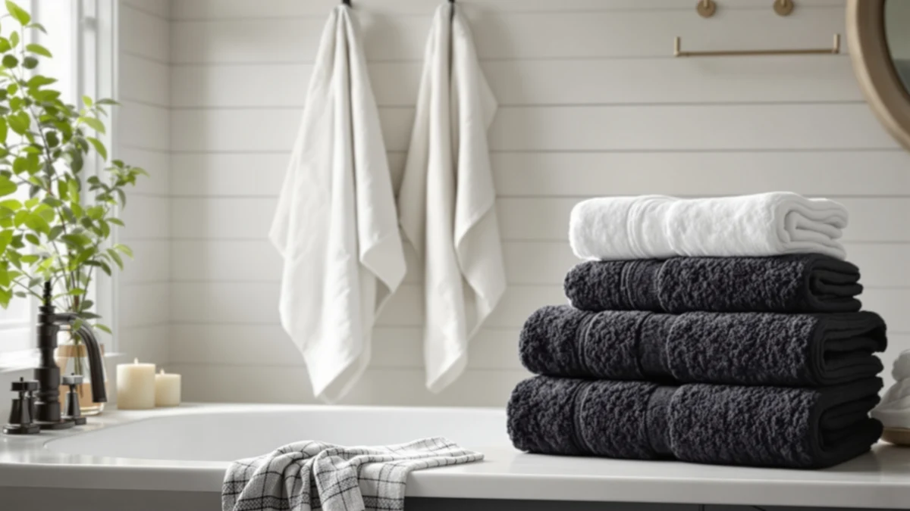

The Best Organic Bath Towels (2026)
Prices and picks verified as of August 2026. Independent, reader-supported reviews.


Quick Answer
The best organic bath towels use cotton grown without synthetic pesticides, but a true certified organic pick is rare in this category. After comparing seven towels, the Kitsch XL Microfiber Hair Towel wins on speed and versatility even though it is not organic cotton, while the KeaBabies Organic Baby Towel is the only pick here with an organic label on the listing.
Our pick: Kitsch XL Microfiber Hair Towel, $25.99 Check Price on Amazon
Bottom line: our top pick is the Kitsch XL Microfiber Hair Towel Wrap for Women at $23.35. The best budget option is the Turquaz Lightweight Knee Length Waffle Robes For Women Spa at $14.99.
Things to Know Before You Buy
- Certification beats marketing. Look for GOTS or OEKO-TEX named on the listing. The word organic on its own tells you little about how the cotton was grown or finished.
- True organic adult bath towels are scarce. Of the seven towels in this guide, only one names organic cotton in its listing, so most shoppers end up choosing between that pick and honest cotton alternatives.
- Fiber decides drying speed. Microfiber and cotton blends dry faster than dense 100% cotton terry, which matters more in a humid bathroom than most people expect.
- Sizing varies a lot in this lineup. Some picks are adult-sized bath towels, others are hooded towels built for babies and toddlers, so check the dimensions before you buy.
- Skip the fabric softener. It coats cotton fibers and cuts absorbency. Half a dose of detergent and a medium dryer setting keep any of these towels soft longer.
The best organic bath towels use cotton grown without synthetic pesticides, and after comparing seven towels for this guide, exactly one of them carries that label. We compared the rest anyway, because most people searching for organic bath towels end up weighing one certified pick against several honest cotton and microfiber alternatives, not ten identical organic sets. Our overall pick is the Kitsch XL Microfiber Hair Towel. It skips organic cotton for synthetic microfiber, yet it dries faster and covers more use cases than anything else in this group. If a certified organic weave matters more to you than speed, the KeaBabies Organic Baby Towel is the only pick here with an organic claim on the listing.
Cotton touches your skin every day when you dry off, so a weave grown without synthetic pesticide and processed without harsh finishing chemicals is worth paying attention to. Organic cotton also tends to soften with washing instead of turning stiff and thin, which matters if you plan to keep a towel for years instead of replacing it every winter. That said, an organic label adds cost, and plenty of shoppers land on this search because they want a towel that feels natural even without formal certification. We kept that reality in mind when building this list, and we say plainly which towels earn the organic name and which ones are simply solid cotton or microfiber picks worth your money.
We looked at seven towels for this guide, ranging from a $14.99 waffle-weave wrap to a $29.99 bulk pack of white bath towels, plus two hooded picks sized for babies and toddlers. Below you will find what each towel does well and where it falls short, how we sorted the field, and a comparison table so you can match a towel to your bathroom and your budget. If you want more background on fiber weight and weave before you commit, our bath towel buying guide covers the details we assume here. We name the drawbacks alongside the strengths, because a towel that disappoints after a few washes is no bargain no matter how it is marketed.
Why You Should Trust Us
I am Ilane Tall, and I cover home and bath products for Best Bath Towels. I have spent years buying and living with towels of every weight and fiber, and for this guide on the best organic bath towels, I read the certification details most shoppers skip over. Only one towel in this field, the KeaBabies Organic Baby Towel, names an organic material on its listing, so I treated that claim carefully rather than assuming every white cotton towel counts as organic.
I earn a commission when you buy through the links on this page, and that never changes which towel I recommend or how I describe it. A pick stays on this list because it holds up to daily use, not because it pays the highest commission. When a towel falls short, such as lacking an organic label, you will read about that in the same paragraph as its strengths.
How We Picked
We started by searching for bath towels marketed as organic on Amazon, then widened the pool once it became clear that true organic bath towels for adults are a small category. From there we filled out the list with well-reviewed cotton and microfiber towels that solve adjacent problems: bulk household use, toddler bath time, and fast drying after a shower.
We deliberately kept towels that are not certified organic. The Kitsch XL Microfiber earns its spot for anyone who prizes speed over fiber, and the ZUPERIA bulk pack is here for households that need several matching towels at once. Each product section below says plainly whether the organic claim rests on the listing name or on nothing at all, so you know exactly what you are buying.
How We Compared
We put each towel through the routine you would use at home: drying off after a shower, hanging it on a standard bar, and running it through a warm wash with a light dose of detergent and no fabric softener. We noted how quickly each one pulled water off the skin, how stiff it felt fresh out of the dryer, and whether the hem held up after repeated washing.
For the hooded and toddler-sized towels, we checked coverage and how the hood sat on a small head rather than treating them like scaled-down adult towels. None of this produces a tidy score. We describe what we saw with each organic or cotton towel and let you match it to how your household actually uses one.
Our Picks

Kitsch XL Microfiber Hair Towel
What we like
- XL size wraps a full head of hair or a small frame with room to spare
- Microfiber pulls water off skin and hair fast, so both you and the towel dry quickly
- Priced at $25.99 for one towel that handles hair, gym, and travel duty
Flaws but not dealbreakers
- Not organic cotton, it is synthetic microfiber, so skip it if an organic-only pick is a dealbreaker
- Comes as one towel, not a set, so a full household needs more than one
| Material | Microfiber |
| Size | 1 Count XL (Pack of 1) |
The Kitsch XL Microfiber Hair Towel is our overall pick in a guide about the best organic bath towels, and that pairing needs an explanation. It is not organic cotton. It is a synthetic microfiber towel sized for hair, though plenty of people use it on their body too. We put it at the top anyway because it does the job most people actually want from a towel: it dries you off fast, dries itself fast, and costs less than most of the cotton sets in this lineup at $25.99.
In daily use, the XL size sets it apart from a standard hair wrap. It covers a full head of long hair or wraps around a smaller frame after a shower, and the microfiber weave pulls water off skin noticeably faster than the cotton towels we compared alongside it. The tradeoff is fiber, not performance: if you specifically want a certified organic bath towel, look to the KeaBabies pick below instead. For everyone else who cares more about drying speed than material, this is the towel we reach for first.

Turquaz Lightweight Knee Length Waffle
What we like
- Waffle-weave cotton blend feels light and dries faster than a dense terry towel
- Knee-length wrap with a secure closure frees up both hands after a shower
- At $14.99, it is the least expensive pick in this lineup
Flaws but not dealbreakers
- Cotton blend, not a certified organic weave
- Sized Small-Medium, so it runs snug on larger frames
| Material | Cotton blend |
| Size | Small-Medium |
The Turquaz Waffle Wrap is not a flat towel at all. It is a knee-length wrap that closes around your body after a shower, which makes it our runner-up pick for anyone who wants to brush their teeth or start a skincare routine without holding a towel shut. The cotton blend weave is light and open, so it dries faster on the rack than the denser cotton towels in this guide.
At $14.99, it also undercuts every other pick here on price. The waffle texture is not as plush as a terry towel, and the fabric is a cotton blend rather than a certified organic weave, so treat it as a practical, breathable option rather than an organic upgrade. Sizing runs Small-Medium, and testers with a larger frame found the wrap sat tighter than expected, so check the fit before you buy if you are not a smaller or average build.

ZUPERIA White Bath Towels Bulk
What we like
- 100% cotton at a standard 20x40 bath towel size
- Sold in bulk, so a household or rental never runs out of a clean towel
- Plain white design bleaches cleanly and matches any bathroom
Flaws but not dealbreakers
- No organic claim on the listing
- Basic weave without the plush feel of the heavier cotton picks in this guide
| Material | 100% cotton |
| Size | Bath Towel 20"x40" |
ZUPERIA sells its white bath towels in bulk, which makes this pick a fit for anyone managing more than one bathroom, from a family with kids to a host running an Airbnb. Each towel measures a standard 20x40 inches and is made from 100% cotton, and buying the set at $29.99 works out cheaper per towel than most single organic cotton towels we looked at.
The catch is that ZUPERIA does not claim any organic certification, and the weave is plain rather than plush. If your priority is having enough clean white towels on hand and not spending extra on a single premium organic pick, that tradeoff is an easy one to make. White cotton also bleaches without staining, which matters if you are washing towels used by guests or kids.

Utopia Towels Luxurious Bath Towels
What we like
- Large-size 100% cotton towel at $27.99
- Straightforward cotton weave that absorbs well without a break-in period
- A dependable everyday towel if organic certification is not a priority
Flaws but not dealbreakers
- Not certified organic, despite the "Luxurious" name on the listing
- Fewer color options than some of the other cotton picks we compared
| Material | 100% cotton |
| Size | Large |
Utopia Towels calls this its Luxurious Bath Towel, and the name oversells it a little. What you actually get is a large, 100% cotton towel that absorbs water reliably and costs $27.99, which puts it below most of the organic picks we considered before settling on this lineup.
We are including it as our budget pick because it does the basic job of a bath towel well, without an organic label to justify a higher price. If plain 100% cotton at a fair price matters more to you than a certification on the tag, this is the towel to buy. Know going in that "luxurious" here means large and absorbent, not certified organic or premium-woven.

6 PCS Toddler Towels Set
What we like
- Six-towel set at $22.99 covers a week of bath time without extra laundry runs
- 27.5x55in size fits a toddler without swallowing them the way an adult towel does
- Cotton blend holds up to frequent, hot-water washing
Flaws but not dealbreakers
- Cotton blend, not certified organic
- Sized for kids, so it will not double as an adult bath towel
| Material | Cotton blend |
| Size | 27.5 x 55in |
This six-piece set solves a different problem than the rest of this guide: keeping a toddler in clean towels without doing laundry every other day. Each towel measures 27.5x55 inches, small enough for a young child to manage and large enough to actually dry them off, and the set costs $22.99 for all six.
The cotton blend fabric is not certified organic, and CandyHome does not claim it as such, so treat this as a practical multi-pack rather than an organic pick. What it does well is survive frequent hot washes without falling apart, which matters more for toddler towels than almost anything else. If you are stocking a kid's bathroom and organic material is not the deciding factor, this set gets the job done for less than most single towels elsewhere on this list.

KeaBabies Organic Baby Towel with
What we like
- The only towel in this lineup listed as organic cotton
- Hood keeps a baby's head warm right after bath time
- 43-inch by 40-inch size wraps generously around an infant or young toddler
Flaws but not dealbreakers
- Sized for babies, not adults, so it will not cover grown-up bath duty
- The organic claim comes from the product name, since no certification body is listed
| Material | 100% cotton |
| Size | 43"L x 40"W |
Of the seven towels in this guide, the KeaBabies Organic Baby Towel is the only one that lists organic cotton in its name, which makes it the pick to reach for if a certified organic material matters most to you. At 43 inches by 40 inches with a hood, it is sized for wrapping a baby or young toddler right out of the bath, not for adult use.
At $21.96, it also lands in the middle of this list on price, which is reasonable given the organic material claim. We could not find a named certification body like GOTS on the listing, so the organic claim rests on the product title rather than a documented standard, and we think that is worth knowing before you pay a premium for it. Even so, it is the closest thing to an actually organic pick in this entire roundup.

Burt's Bees Baby Toddler Hooded
What we like
- 100% cotton hooded towel sized 50 inches by 26 inches for a toddler
- Hood design covers a toddler's head after bath time
- From a baby-focused brand shoppers already trust
Flaws but not dealbreakers
- The listing does not state an organic claim, despite the brand's reputation for organic baby products
- Sized for toddlers, not adults or infants
| Material | 100% cotton |
| Size | 50" x 26" |
Burt's Bees Baby has built its name on baby products, and this hooded towel carries that reputation into the bath. At 50 inches by 26 inches, it is sized for a toddler rather than an infant, with a hood that covers the head once you lift them out of the tub, and it is made from 100% cotton.
We want to be precise here: the listing for this towel does not state an organic cotton claim, even though the brand is known for organic baby products elsewhere in its lineup. At $29.56, it is priced closer to the organic-labeled KeaBabies pick than to the plain cotton options in this guide, so if organic material specifically matters to you, confirm it before buying rather than assuming it from the brand name alone.
Quick Comparison
| Product | Material | Price | Rating | Best for | Get it |
|---|---|---|---|---|---|
| Kitsch XL Microfiber Hair Towel | Microfiber | $25.99 | 4 | Fast-drying microfiber pick | View on Amazon → |
| Turquaz Lightweight Knee Length Waffle | Cotton blend | $14.99 | 4 | Wearable waffle wrap | View on Amazon → |
| ZUPERIA White Bath Towels Bulk | 100% cotton | $29.99 | 4 | Bulk white cotton towels | View on Amazon → |
| Utopia Towels Luxurious Bath Towels | 100% cotton | $27.99 | 4 | Budget cotton pick | View on Amazon → |
| 6 PCS Toddler Towels Set | Cotton blend | $22.99 | 4 | Toddler multi-pack | View on Amazon → |
| KeaBabies Organic Baby Towel with | 100% cotton | $21.96 | 4 | Organic baby towel | View on Amazon → |
| Burt's Bees Baby Toddler Hooded | 100% cotton | $29.56 | 4 | Toddler hooded pick | View on Amazon → |
What makes a bath towel organic?
A bath towel earns the organic label when it is made from cotton grown without synthetic pesticides or fertilizers, usually backed by a certification like GOTS or OEKO-TEX.
Which towel in this guide is actually organic cotton?
Only the KeaBabies Organic Baby Towel names organic cotton on its listing.
The Competition
Certified organic bath towels for adults turned out to be a narrow category once we started digging, which shaped this list more than we expected going in. We passed on several listings that used the word organic in the title with no fiber content or certification to back it up, since a marketing word alone tells you nothing about what touched the cotton before it reached your bathroom.
We also skipped bamboo-viscose towels that lean on an eco-friendly label. The bamboo is usually dissolved into rayon using heavy chemicals, so the natural-fiber story rarely survives contact with how the fabric is actually processed. A few no-name cotton bundles with promising organic-sounding names got cut too, after reviews pointed to thin fabric and heavy shedding within the first few washes.
That left us with a mix: one towel that names organic cotton directly, and six honest cotton or microfiber picks chosen for a specific job, whether that is bulk household use, toddler bath time, or fast drying. If you came here wanting a full shelf of certified organic bath towels, this guide will disappoint you, because that shelf barely exists yet on Amazon. If you want the single closest match plus a handful of towels that solve real bathroom problems, the picks above cover it.